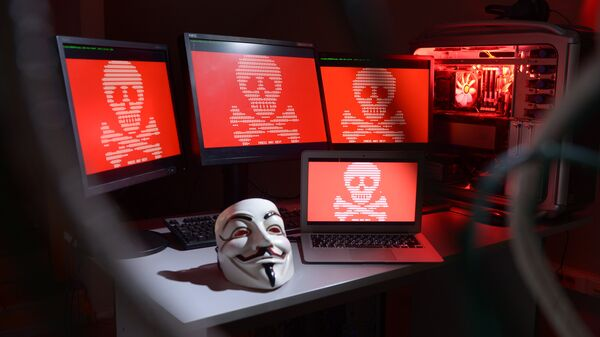
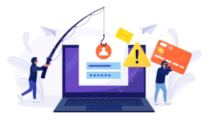

Кібератака: що робити, якщо зламали комп’ютер

Що таке кібербезпека?
В раніше ми вже розглядали питання кібербезпеки, типи загроз та як від них захиститись. Отже,
Кібербезпека – це комплекс процесів, практичних порад і технологічних рішень, які допомагають захищати важливі системи й мережу від кібератак.
Загроза для кібербезпеки – це умисна спроба отримати доступ до системи окремого користувача або цілої організації. Зловмисники постійно вдосконалюють свої методи атак, щоб уникати виявлення й використовувати нові вразливості. Однак деякі з цих методів досить поширені, і до них можна підготуватися.
Кібератака – спрямовані (навмисні) дії в кіберпросторі, які здійснюються за допомогою засобів електронної комунікації.
Кібератака може відбуватися на будь-який об’єкти у цифровому просторі: цифровий пристрій (комп’ютер, ноутбук, планшет, смартфон, сервер, телевізор, радіоняню, «розумний дім» тощо), комп’ютерну мережу, обліковий запис, електрону пошту, сторінку в соц.мережі чи в інтернеті, сайт, канал тощо.
Результат такого втручання може бути різним: від майже непомітної присутності «стороннього спостерігача» (який краде ваші дані, змінює їх, ставить свої програми, стає адміністратором ПК – тобто робить те, що схоче хакер) до знищення об’єкту атаки (деякі віруси можуть фізично знищувати техніку або призводити до серйозних збоїв в її роботі; інформація може бути знищена чи зашифрована з або без можливості її розшифрувати).
Часто саме помилки користувачів, такі як натискання на фішингові посилання, несвоєчасне оновлення програм чи відстутність двофакторної автентифікації, допомагають кіберзлочинцям легко зламати комп’ютер та отримати доступ до всіх даних. Зловмисникам доступно багато векторів атак, нескінченна кількість викрадених даних та сайтів для продажу інформації, а також шкідливих інструментів.
Під час атак для хакерів найважливіше добре замаскувати свою діяльність, тому що чим довше користувачі не підозрюють про шкідливу активність, тим більше зловмисники можуть заробляти на них.
Декілька міфів накшталт «Кібератака – це не про мене» або як вірус потрапляє у комп’ютер
Деякі користувачі особистих ПК вважають, що кібератаки направлені передусім на підприємства, організації, установи тощо, а не на звичайних користувачів, які здебільшого на комп’ютері грають в ігри, дивляться фільми та серіали і спілкуються в соцмережах і не зберігають якихось конфіденційних даних ні на комп’ютері, ні в електронній пошті, ні в хмарному сховищі. Іноді користувачі вважають, що антивірус зможе відстежити і заблокувати всі загрози, і почувають себе в цілковитій кібербезпеці.
Нажаль, це примарна кібербезпека. Кібератака може бути направлена не особисто на користувача, а взагалі на всіх користувачів, до яких зможе потрапити вірус (кібертероризм), чи на підприємство, де працює людина (соціальна інженерія), можливо ціль кібератаки – дані електронної пошти та акаунтів в соцмережах, від яких потім буде приходити спам, чи дані банківських карток… Отже об’єктом кібератаки може бути будь-який девайс користувача, особливо з доступом в інтернет.
Ліцензійний надійний періодично оновлюваний антивірус дійсне забезпечує високий рівень захисту ПК. Але він не захищає на 100% від кібератак.
Розглянемо приклад фішінгової атаки або як отримати повний доступ до чужого комп'ютера, знаючи тільки e-mail.( https://goo.su/Snjzebv) Отже, користувачу на e-mail надійшов лист з посиланням («Добридень! На Ваш E-mail адресу була відправлена листівка, щоб подивитися її, натисніть сюди») і він перейшов по ньому. Тепер хакер отримав IP, а користувач – свою листівку.
Далі хакер перевіряє хост (комп'ютер) на наявність вразливостей - відкритих портів. Якщо вони є – від вже може зайти на ваш ПК, якщо вони закриті – намагається їх відкрити (через Інтернет). Потім встановлює через telnet на ПК користувача те, що потрібно для зручності і здійснює свій злобний план .
Зазвичай першочергова ціль – додати свій обліковий запис на ПК з правами адміністратора. Потім хакер може робити все, що завгодно на вашому ПК, головне, щоб комп’ютер був в Інтернеті. Для антивіруса він – користувач-адміністратор вашого ПК, а не шкідливий вірус.
Це один з прикладів, як хакер може заволодіти ПК. Також зламати ПК може інше шкідливе програмне забезпечення: віруси, хробаки, троянські коні, шпигунські програми, ізгоїв програми безпеки тощо (потрапляють в ПК через інші програми, з фішінгових листів чи посилань, з заражених електронних носіїв інформації: флешек, дисків, вінчестерів тощо)

Як дізнатися, що комп’ютер зламано?
Вимога викупу
Повільна робота комп'ютера
Самостійне вмикання вебкамери
Самостійний рух курсора
Небажані повідомлення з акаунтів вашим знайомим
Велика кількість спливаючих вікон чи вікон з рекламою
Зміна домашньої сторінки, поява нових інструментів у браузері
Поява нових програм на комп’ютері, які ніхто не встановлював
Невідомі значки
Перенаправлення запитів
Втрата доступу до своїх облікових записів
Попередження про загрозу від рішення з безпеки
Відключення антивіруса або брандмауера
Якщо відразу після увімкнення комп’ютера, ви бачите повідомлення з вимогою викупу, а не звичайний початковий екран, велика ймовірність, що ви стали жертвою програм-вимагачів. Зазвичай у такому повідомленні вказується короткий проміжок часу для оплати, а також інструкції для здійснення платежів у цифровій валюті. Однак навіть у випадку дотримання усіх цих вимог ви можете не відновити доступ до зашифрованих файлів.
Наявність на комп’ютері шкідливого програмного забезпечення, зокрема троянів, черв’яків та загроз для майнінгу криптовалюти, часто сповільнює роботу пристрою. Особливо це стосується процесу "криптоджекінга", під час якого використовується багато обчислювальної потужності для майнінгу цифрової валюти. Також повільна робота комп’ютерів може бути наслідком інших факторів, наприклад, недотримання правил кібергігієни. Однак у будь-якому випадку краще переконатися, що це не дії зловмисників.
Деякі шпигунські програми, встановлені хакерами, призначені не лише для збору даних із комп’ютера, але й для прихованого вмикання вебкамери та мікрофона. Це може дозволити кіберзлочинцям записувати та викрадати відео з участю користувачів, зокрема з ціллю подальшого шантажу. Будьте уважними і пам’ятайте, що увімкнення індикатору вебкамери, коли ви нею не користуєтесь, свідчить про те, що ймовірно комп’ютер зламаний. Тому закривайте об’єктив камери, коли вона не використовується, хоча це не завадить зловмисникам записувати аудіо через мікрофон. Найбільш надійним варіантом буде використовувати рішення для захисту з функцією захисту вебкамери, яка блокуватиме доступ процесів та програм до неї.
Зазвичай при хаотичному переміщенні курсора миші, ми думаємо про те, що є якісь проблеми безпосередньо з нашим обладнанням. Однак якщо курсор поводиться з "розумом" і може запускати певні програми, - це напевне свідчить, що комп’ютер був зламаний. Робимо все як завжди, запускаємо в режимі безпеки і проводимо чистку комп'ютера.
Ще одна ознака, що ваш комп’ютер зламаний, це скарги від ваших друзів та контактів на спам-повідомлення, які надходять з електронної пошти чи в соціальних мережах. Поширена тактика фішингу полягає у викраденні облікових записів жертв, а потім їх використанні для розсилання спаму всім друзям. Цій загрозі можна запобігти за допомогою використання двофакторної автентифікації для всіх облікових записів.
Спливаючі вікна з'являються по ряду причин, однією з яких є просто погана настройка браузера, але, якщо раніше їх не було так багато і раптом користувач став одержувати їх дуже часто, то є велика ймовірність того, що на комп'ютері є шкідлива програма. У цих вікнах також може міститися реклама чи фішингові повідомлення та посилання. Відображення великої кількості реклами на пристрої користувача – ще один способом заробітку грошей для зловмисників. Одним із способів захиститися від цього - ретельно переглядати розширення браузера, адже нерідко шкідливий код знаходиться саме в них.
Якщо у браузері раптом відбулися різкі зміни, наприклад, зміна пошукової сторінки за замовчуванням, невідомі розширення і зміна стартової сторінки, поява нових інструментів, які ви не впізнаєте та не завантажували раніше, - це може свідчити про те, що ваш комп’ютер зламаний. Шкідлива програма також може встановити додаткові панелі у вашому браузері, нові розширення в списку тощо. Якщо ви помітили якісь нові розширення у себе в списку, рекомендується видалити їх. Якщо проблема не хоче зникати, то як варіант - це запуск комп'ютера в режимі безпеки і видалення розширення саме так. Іноді щоб видалити шкідливі елементи, можле знадобиться скинути пристрій до заводських налаштувань чи оновити ПЗ.
Не завжди поява нової програми, яку користувач не ставив, - ознака вірусі. Іноді при встановленні однієї програми на комп’ютері з’являється декілька нових – це тому, що при інсталяції користувач не прибрав зайві галочки у вікні установки. То ж якщо виникають сумніви стосовно якоїсь програми - пошукайте про неї інформацію в інтернеті. Це дозволить зрозуміти, чи варто позбутися від неї.
Коли шкідливе програмне забезпечення встановлено на інфікований комп’ютер, на робочому столі часто з’являються нові значки. Їх можна легко помітити, якщо на робочому столі невелика кількість файлів, папок та програм. Тому, щоб полегшити відстеження значків на вашому пристрої, варто навести порядок на робочому столі.
Якщо при натисканні якихось посилань ви переходите не на той сайт, який планувався, -це ще одна ознака того, що комп’ютер зламали. Щоб позбутися проблеми потрібно шукати шкідливе ПО на комп'ютері, а також аналізувати дії користувача в інтернеті.
Щоб інфікувати комп’ютер, хакери можуть зламати електронну пошту та інші облікові записи в Інтернеті та змінити паролі, щоб заблокувати доступ для вас. Зазвичай для цього зловмисники використовують підроблені листи, маскуючись під авторитетні організації, та просять надати дані для входу. Щоб відновити доступ до акаунту, вам потрібно повідомити про це онлайн-провайдера через офіційні канали зв’язку, та дотримуватись його рекомендацій.
Попередження від рішень для захисту пристроїв слід сприймати серйозно, хоча підроблені спливаючі вікна таких програм також використовуються зловмисниками. Фейкові попередження від антивіруса є ще одною явною ознакою того, що ПК піддався злому. Перевірте, чи повідомлення надходить від вашого постачальника рішення, а потім дотримуйтесь інструкцій, щоб спробувати знайти та видалити шкідливі файли з пристрою. Щоб розпізнати фейкові необхідно знати, як виглядають справжні повідомлення від антивірусу. Нажаль таку підробку помічають вже тоді, коли комп'ютер буде атакований. При підозрі на фейкові повідомлення від антивіруса завершіть процес програми в диспетчері завдань, після чого запустіть свій ПК в режимі безпеки, при цьому не входячи в мережу. Після цього спробуйте деінсталірувати твою захисну програму. Потім запустіть комп'ютер в стандартному режимі і перевірте, чи надходять такі повідомлення, далі запускаємо пошук вірусів, а також проводимо чистку реєстру. Пам'ятайте, що іноді для очищення комп'ютера від загрози необхідно здійснити кілька дій.
Ця ознака буквально кричить про те, що щось не так і що вас швидше за все зламали. Відключаючи антивірус і файрвол, зломщик зменшує рівень захисту ПК, щоб проведені ним атаками були більш потужними і доцільними. Якщо ви помітили, що програми, призначені для захисту комп'ютера від шкідливого ПО, наприклад, постійно перезапускаються або зовсім відключені, то швидше за все це злом. Щоб вирішити дану проблему можно відключити Інтернет, потім запустити комп'ютер в режимі безпеки і провести сканування комп'ютера без інтернету. Якщо все зовсім погано, то можна скористатися відновленням системи.
Що робити, якщо комп’ютер «зламано», або ви підозрюєте це
(поради від кіберполіції та експертів з кіберзахисту)
Якщо комп’ютер включений і працює нормально, але ви підозрюєте, що він може бути заражений, ні в якому разі не перезавантажуйте його (якщо ПК вже постраждав – також не перезавантажуйте його) – вірус спрацьовує при перезавантаженні і зашифровує всі файли, які містяться на комп’ютері.
У випадку виявлення порушень у роботі комп’ютерів, які працюють у комп’ютерних мережах, негайно від’єднати їх від мереж (як мережі Інтернет, так і внутрішньої мережі).
Збережіть всі файли, які найбільш цінні, на окремий не підключений до комп’ютера носій, а в ідеалі – резервну копію разом з операційною системою.
Для ідентифікації шифрувальника файлів необхідно завершити всі локальні задачі та перевірити наявність наступного файлу : C:Windowsperfc.dat
З метою запобігання випадків несанкціонованого втручання в роботу (в залежності від версії ОС Windows) встановити патчі з офіційного ресурсу компанії «Microsoft» (https://technet.microsoft.com/ru-ru/library/security/ms17-010.aspx).
Потрібно переконатися, що на всіх комп'ютерних системах встановлене антивірусне програмне забезпечення функціонує належним чином та використовує актуальні бази вірусних сигнатур. За необхідністю встановити та оновити антивірусне програмне забезпечення. Зазвичай більшість вірусів виявляються і знешкоджуються антивірусними програмами. Але якщо вірус вже зламав систему антивірусних програм ПК вони не показують присутність вірусу. Тому якщо маєте сумніви щодо вірусу, можете спробувати поставити новий антивірус (іноді це вдається, хоча вірус може заблокувати встановлення нового антивірусу) або запустити тестову антивірусну програму (експрестест може показати вірус, але навряд чи знешкодить його)
Для зменшення ризику зараження, слід уважно відноситися до всієї електронної кореспонденції, не завантажувати та не відкривати додатки у листах, які надіслані з невідомих адрес. У випадку отримання листа з відомої адреси, який викликає підозру щодо його вмісту — зв’язатися із відправником та підтвердити факт відправки листа.
Зробити резервні копії усіх критично важливих даних.
Коли користувач бачить «синій екран смерті», дані ще не зашифровані, тобто вірус ще не дістався до головної таблиці файлів. Якщо комп’ютер перезавантажуються і запускає check Disk, негайно вимикайте його. На цьому етапі ви можете витягнути свій жорсткий диск, підключити його до іншого комп’ютера (тільки не у якості завантажувального тому, а як додатковий носій інформації) і скопіювати файли.
За всіма випадками кібератак радимо звертатись з повідомленнями до поліції для негайного реагування на кіберінцидент.
Щоб видалити шкідливе ПЗ та відновити контроль за власним ПК можна або звернутися в сервісний центр до фахівців, або перезавантажити пристрій у безпечному режимі і запустити систему сканування ПК на предмет пошуку вірусних програм, яка дозволить виявити їх і надалі видалити. Якщо під час сканування знову з'являється одна й та ж шкідлива програма — значить, саме в ній і криється причина несправностей. Якщо вам вдасться її видалити, то працездатність комп'ютера буде відновлена. Існують і такі типи вірусів, видалити які можна виключно вручну. Але не варто забувати, що вдаватися до такого способу очищення пристрою можна лише в тому випадку, якщо ви добре знаєтесь на Windowsі можете бути впевнені, що помилково не видалите системно важливі файли та додатки. При виявленні підозрілих об'єктів будьте максимально обережні, а після видалення не забудьте очистити корзину перед перезавантаженням комп'ютера. Є більш радикальний варіант: відформатувати диск і встановити операційну систему, антивірус та інші програми. Якщо навіть форматування диску не допомогло – зверніться до фахівців.
Після відновлення системи можна спробувати «відновити» дані з «заражених» носіїв. Для цього встановіть на комп’ютері, з якого ви будете працювати з небезпечними файлами, ліцензійне ПЗ, антивірус і поставте максимальний рівень безпеки. Відкривайте файли тільки в режимі безпечного перегляду і якщо антивірус це дозволяє. Робіть копії «небезпечних» файлів і зберігайте їх окремо. Будьте пильні: навіть звичайні документи (docx, rtf, pdf) можуть бути вірусними програмами, особливо якщо такі файли надійшли поштою від сумнівного чи невідомого відправника.
Про всяк випадок змініть паролі облікових записів (в т.ч. банківських), електронних ящиків тощо. Паролі повинні бути унікальними (не повторюватись), складними, не менше 8 символів мати цифри, літери у верхньому та нижньому регістрі та спеціальні символи. Бажано, щоб паролем не була якась логічна фраза.
Попередьте своїх адресатів про виявлені проблеми, бо шкідливе ПЗ чи хакер міг дістатися і їхнього обладнання. До того ж можливі фішінгові розсилки з вашого облікового запису чи пошти, якщо кібератака дісталась вже й до них.
Пильно наглядайте за вашими рахунками. Витокі даних не завжди помітні з першого погляду. Часто кіберзлочинці використовують доступ до вашого банківського рахунку для здійснення фінансових операцій: покупок, сплати рахунків тощо. Більшість банків відстежують підозрілу активність, але ви можете перевіряти виписки самостійно, щоб виявити несанкціонований доступ. Якщо є вірогідність отримання доступу кібершахраями до ваших рахунків – тимчасово заблокуйте можливість здійснювати будь-які банківські операції з використанням вашої картки.
Як зменшити ризик кібератаки на персональний комп’ютер
Використовуйте тільки надійні ліцензійні версії антивірусного програмного забезпечення. Вони мають розширений і покращений функціонал, і здатні розпізнати найбільшу кількість інноваційних небезпечних ПЗ, і захистити від них. Не встановлюйте безкоштовні або “крякнуті” антивіруси з метою економії. Крім того, що вони мають обмежені можливості, вони і самі можуть стати джерелом зараження.
Не відвідуйте веб-сторінки, надійність яких викликає у вас хоч найменші сумніви.
Якщо у вас на робочому столі або в завантаженнях незрозумілим чином з’явилися файли, які ви точно не скачували, не поспішайте їх відкривати. Так ви зможете захистити свій комп’ютер від вірусу, який цілком може запуститися разом з ними.
Отримавши електронною поштою повідомлення від незнайомих осіб, особливо, які містять незрозумілі вкладення, не відчиняйте їх, не перевіривши антивірусом.
Захистити комп’ютер від вірусів допомагає блокування спливаючих вікон, в яких, крім рекламної інформації, може перебувати і шкідливий код.
Не завантажуйте додатки і програми з неперевірених джерел чи ненадійних носіїв (флешек, дисків тощо).
Будьте особливо обережні, якщо вам в інтернеті пропонують «подарувати» платну версію ліцензійного ПЗ. Не пошкодуйте часу, і зайдіть на сайт офіційного розробника за додатковою інформацією – чи проводять вони такі акції насправді. Так ви зможете убезпечити комп’ютер від шкідливого вірусу, який може стати неприємним доповненням до «подарунку».
Зараз в мережі зловмисниками створюється безліч сайтів-клонів популярних організацій, які повністю копіюють їх інтерфейс. Тому, щоб не стати жертвою хакерів, і запобігти зараженню, ретельно перевіряйте адреси веб-ресурсів. Особливо тих, на яких передбачається введення особистих даних або оплата товарів і послуг банківськими картами (інтернет-магазини, квиткові каси і т.д.).
Періодично або за-потреби робіть копії важливих для вас файлів та зберігайте на окремих носіях чи в хмарних сховищах.
Завжди використовуйте тільки складні унікальні паролі
Якщо комп’ютером користується вся сім’я, захистити його від вірусів поодинці не вийде. Тому стежте за тим, щоб усі користувачі, а особливо діти, дотримувалися кібергігієни.
За матеріалами: